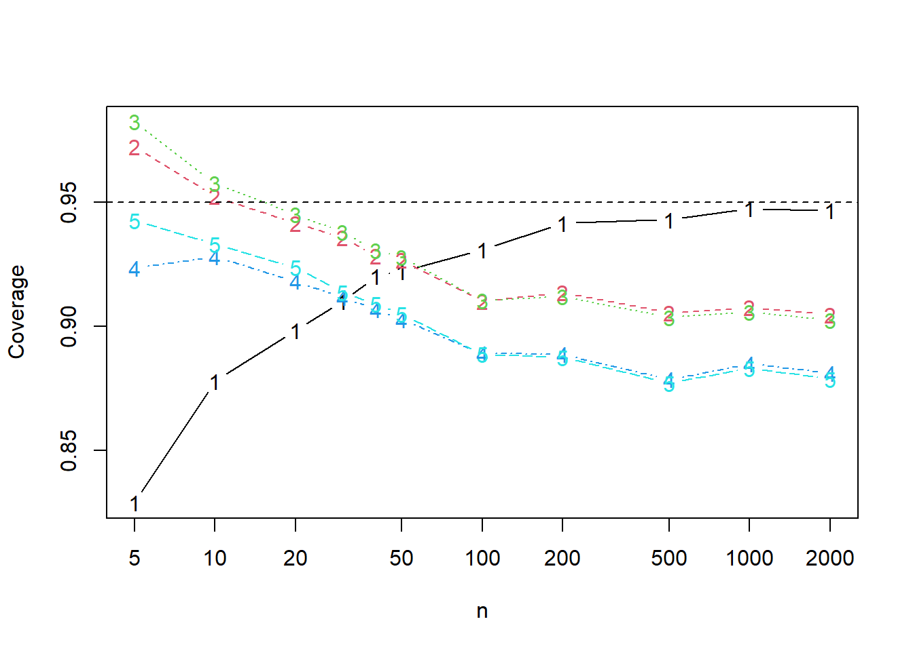

model <- c('y =~ A1 + A2 + A3 + A4 + A5')
fit <- lavaan::cfa(model, data = psychTools::bfi)
coefs <- lavaan::lavInspect(fit, what = "x")
lambda <- abs(c(coefs$lambda * sqrt(as.numeric(coefs$psi))))
sigma <- sqrt(diag(lavaan::lavInspect(fit, what = "x")$theta))Simulation of confidence intervals with psychoTools::bfi.
Setting up the simulations
We use the dataset bfi from the package psychTools together with lavaan to estimate some realistic factor loadings \(\lambda\) and standard deviations \(\sigma\).
We take the absolute value of the lambda vector as the agreement data contains reverse-coded items.
Comparing confidence intervals coverages and lengths
We compare five confidence intervals, all without transformations. The adf interval is the asymptotic distribution-free interval, the ell interval is the interval based on elliptical distributions and a kurtosis correction, the ell_par is the elliptical interval assuming a parallel model. The same comments hold for norm (assuming normal data) and norm_par (assuming parallel normal data).
In this simulation we normal error terms and a Laplace-distributed latent variable. This one has excess kurtosis \(3\), which caries over in large part to the data.
library("alphaci")
library("future.apply")
plan(multisession)
set.seed(313)
n_reps = 10000
k <- 5
true = alpha(sigma, lambda)
success = \(ci) true <= ci[2] & true >= ci[1]
len = \(ci) ci[2] - ci[1]
simulations = \(n) {
results = future.apply::future_replicate(n_reps, {
latent = \(n) extraDistr::rlaplace(n) / sqrt(2)
x = simulate_tau(n, k, lambda, sigma, latent = latent)
cis = rbind(adf = alphaci(x),
ell = alphaci(x, type = "elliptical"),
par = alphaci(x, type = "elliptical", parallel = TRUE),
norm = alphaci(x, type = "normal"),
norm_par = alphaci(x, type = "normal", parallel = TRUE)
)
c(cov = apply(cis, 1, success), len = apply(cis, 1, len))
}, future.seed = TRUE)
rowMeans(results)
}
simulations(10) cov.adf cov.ell cov.par cov.norm cov.norm_par len.adf
0.8745000 0.9513000 0.9566000 0.9223000 0.9297000 0.7680810
len.ell len.par len.norm len.norm_par
1.0238478 1.0499270 0.9113473 0.9342908 It appears that the kurtosis corrections work well, at least for small sample size. Let’s see how they perform when \(n\) increases.
nn <- c(5, 10, 20, 30, 40, 50, 100, 200, 500, 1000, 2000)
results <- sapply(nn, simulations)Plotting the coverages, we find:
matplot(nn, t(results[1:5, ]), xlab = "n", ylab = "Coverage", type = "b",
log = "x")
abline(h = 0.95, lty = 2)
Hence the kurtosis correction intervals have better coverage than the adf interval when \(n\leq 50\) and outperforms the normal theory intervals for all \(n\). If this observation is general remains to be seen.